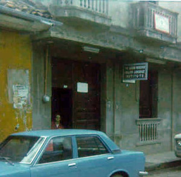
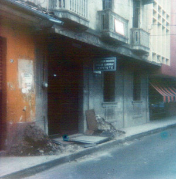

It was a warm morning in early October of 1980, in Tapachula, Mexico. I was sitting in my wheelchair at the entrance of the Instituto de Inglés Javier-McKeever where I was working as a teacher of English. I had just left my school teaching job at West Harvey-Dixmoor USD #147, Harvey, Illinois a mere four months before, packing all of my worldly goods - or as much as I could manage - in my Dodge van, and setting out on a most unique odyssey in order to fulfill at least two of my three dreams of my life. Little could I know that the young woman who soon approached me was about to fulfill my third.Being the mathematician that I am, or pretend to be, I should state that chronologically speaking, she would be involved in my second dream, not my third. You see, my first dream began taking form when I was a very young boy, perhaps 10 years old or so. I encountered an old Spanish textbook in my grandmother's house, a book my mother had used in high school in the 1930's. I was completely enthralled by what I saw in those pages. The seed was planted in my very heart and soul, that I wanted to learn this language, and perhaps even visit or live in a land where it was spoken by everyone.
Gradually over the following 20 years, I did have several formal, as well as informal, opportunities for at least learning to read and write the language. But living in western Kansas as I did left little in the way of meeting native speakers. I had to content myself with pen-pals that I met by way of an international good-will project, called People-to-People. More about this later.
My second dream was of a more standard nature, for most people anyway. When I was in my mid-to-late 20's, I wanted to find a wife. Now I hear you saying, "What's the big deal about that? People get married everyday." Recall that I said I was sitting in a wheelchair in that doorway. And not your ordinary wheelchair either. It was an electric model - E & J Power series. It was a necessity of life for me in order function as a teacher and "normal" human being. In 1955 I had suffered a major attack of polio when I was 14 years old, being left with complete paralysis in both legs and my right arm. My left arm I called my "50% arm" (there goes that math again!), because I had so little use of it. I could clench my fingers to make a fist or hold a pencil, but could not open or extend my fingers out straight. The same was true at my wrist and elbow. I had the ability to move my flexors, but not my extensors. Hence, it was in reality only half an arm. Now, that means that if I could ever find a woman to marry me, I certainly wouldn't be able to carry her over the threshold of our little love nest, could I?
Making that dream even more difficult to achieve was that I lived in very small Kansas towns at that period of my life. Most of the people my age were either already married or had left town for the big cities. My parents were also a negative factor. Knowing all too well the responsibilities entailed in taking care of me - dressing me, feeding me, bathing me, etc. "24/7" - they were of the firm opinion that no girl or young woman would ever give me a second look. And for a long while, it seemed that they just might be right. But still there was something nagging inside me. Surely somewhere in this big world there had to be somebody who could look past the burdensome exterior and see the good person I really was inside. I mean, just look at all the weird guys some women fall for these days. But more about this later as well.
My third dream began to take shape along a religious dimension, when while attending graduate school at the University of Illinois, at Urbana-Champaign, I met the Bahá'í Faith in 1972. I soon became a member of this world-wide faith the next year. One of the interesting features of this religion is called "pioneering". It is similar to what some other organizations do in that its followers are encouraged, but not required, to travel to other lands to spread the Word. Unlike many who do this from other faiths, a Bahá'í is not a missionary who is sponsored or supported financially by a home base. This means a Bahá'í "pioneer" must find a job in his or her new home, become an integral part of his or her new culture, hopefully speaking the language, etc.
  Terry, sitting in the doorway
of the instituteAnother view of the front door
of the instituteI think you should now be able to begin to appreciate my situation as I'm sitting there in my wheelchair, in a Mexican city, teaching English, and watching the "girls go by". Dreams #1 and #3 were now accomplished just by physically being there. And unbeknownst to anyone, this young woman, who was now approaching me, was about to help me realize my second dream. Her name, as I was to learn later, was Gloria. And never was a name more appropriate than in this case. Standing before me was as pure an angel as ever existed, sent by the Man upstairs Himself.
She was accompanied by her sister, Yolanda. They had recently left El Salvador, with another brother and sister. Both were in their late 20's and looking for work. Gloria had also brought along her 9-year-old daughter, Areli. The coyote who had promised to take the five of them, along with others escaping the troubles then present in their homeland, had abandoned everybody in this city in the tip of southern Mexico. Naturally, they had little money on them. Mouths had to be fed and a place had to be found to sleep. But, as I was soon to learn, these five beautiful people were a hardy bunch, willing to struggle against difficult odds, in order to survive.
As the two reconnoitered the streets, seeking a possible place to do anything that would earn them a few pesos, they came to where I was. On the large door the owner of this private institute had placed a little sign that said: Se necesita muchacha. [Girl-servant is needed.] Gloria stepped up and asked if the position was still available, or words to that effect. In my halting Spanish, only now becoming fluent on the oral level, I directed them to enter and speak to Doña Anna, the co-owner of the business.
What was needed was someone to wash clothes. There were many people in the total family, Anna, her husband, Humberto, two adult children, etc. Part of my deal to work for the institute included such services as well. I was virtually a member of the extended family. There was an open-air laundry area behind the house, typical of the style of architecture in this culture. As washing machines were an unheard-of luxury for most people, all the work was done manually. Surely, dear reader, you have seen photographs of women washing clothes in the rivers of various countries. At least, this job was one step up on the convenience scale of civilization.
However, these women had little choice. They had to do something, anything, in order to survive. So naturally they accepted. Immediately, they went right to work. After finishing a large quantity of clothing and being paid, they left. For all intents and purposes, that was that. Whether or not they would return to do more laundry was nothing of my direct concern. The need would certainly be there, but there were always more "muchachas" needing money, right?
A few days later they did return. They had gone out into the coffee plantations with the hope of earning more money, picking coffee beans. Fortunately for me, that turned out unsuccessfully. Faced with need to buy food to eat, they came to the institute, intending to wash more clothing. And equally fortunate for them, the present cook had just called in to say she wasn't returning to work any more. Anne approached Gloria with a new proposition, asking, "¿Sabes cocinar? [Do you know how to cook?]" "Seguro. [Sure.]", she replied.
With that, the Institute had a new cook. Right from the start, the meals became decidedly more delicious, too. And in less than a year I was destined to fulfill my second dream.
| Comments? Send e-mail. |
Back to top |
Go back to Contents |
non prescription viagra non prescription viagra canada generic viagra usa cheap generic viagra canada generic viagra usa non prescription viagra online generic viagra non prescription viagra usa canada online generic viagra order generic viagra usa order viagra usa non prescription viagra order viagra usa viagra online non prescription order viagra canada viagra without perscription canada order viagra usa order viagra canada order viagra canada order viagra canada order viagra usa viagra online non prescription order generic viagra online order generic viagra canada